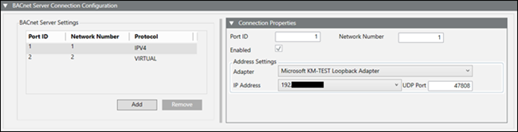
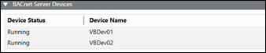
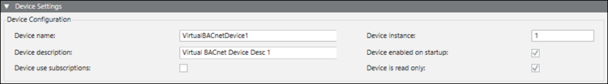
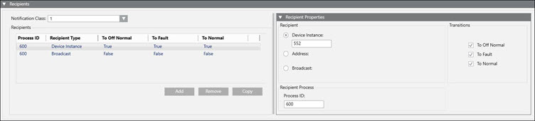
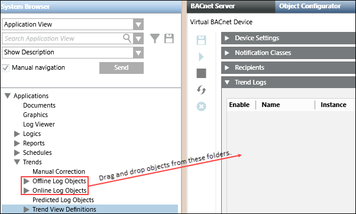
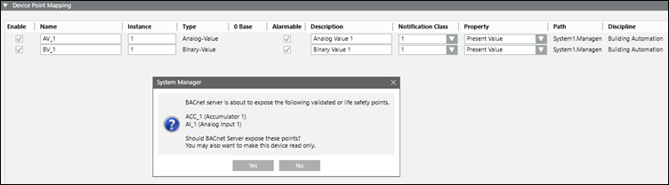

BACnet Server Workspace
The BACnet Server workspace consists of several sections available from the BACnet Server tab. The sections that display are determined by your selection in System Browser.
BACnet Server Connection Configuration
Selecting BACnet Server in System Browser allows you to add a network connection to the management platform and configure the connection properties.

BACnet Server Settings | |
Field | Description |
Port ID | A unique ID. |
Network number | A unique number. |
Protocol | The protocol selected, either IPv4 or Virtual, when you add a new network type. |
Add | Adds a new network type to the table. |
Remove | Removes a network type from the table. |
Connection Properties | |
Field | Description |
Port ID | The Port ID for the currently selected row in the BACnet Server Settings table. This field is editable with a value of 1 – 254.. |
Network number | The Network number for the currently selected row in the BACnet Server Settings table. This field is editable with a value of 1 – 65534. |
Enabled | Enables this port in the BBS configuration (the BT BACnet Stack). If there are multiple ports, you can enable or disable this port. |
Adapter | The hardware adapter used by this server. Visible only for IPv4 connections. |
IP address | The IP address used by the adapter. Visible only for IPv4 connections. |
UDP Port | The UDP port used by the adapter. Visible only for IPv4 connections. |
BACnet Server Devices
Selecting BACnet Server in System Browser allows you to view virtual device status and name.

BACnet Server Devices | |
Field | Description |
Device Status | Status of the virtual device. Possible values are For configuration errors, see the Troubleshooting section. |
Device Name | Name of the virtual device. |
BACnet Server Device Settings
Selecting a virtual device in System Browser allows you to edit the device settings.

BACnet Server Device Settings | |
Field | Description |
Device name | A unique name on the BACnet network. |
Device instance | A unique number on the BACnet network. Acceptable values are |
Device description | Displays the description of your choice. |
Device enabled on startup | When selected, the device starts automatically when the project starts. |
Device use subscriptions | When selected, BACnet Server creates COV subscriptions for all mappings in the list. |
Device is read only | When selected, the points in the device will not be commandable and alarms cannot be acknowledged. |
Notification Classes
A notification class is a list of devices (recipients) that receive alarms and alarm acknowledgments when an object enters an alarm condition.

Notification Classes | |
Item | Description |
Notification Class Entries Table | Add: Adds an entry in the Notification Class Entries table. Remove: Removes a selected entry in the Notification Class Entries table. Instance No.: The number entered in the Instance No. field. Priorities: The priorities selected in the Priority fields. # of Recipients: The number of devices registered to receive alarms and alarm acknowledgements. |
Notification Properties Section | Instance No.: The instance number distinguishes an object from other objects of the same type within a device. Priority: Allows selection of the following alarm states: |
Recipients
A recipient is a device that receives alarms and alarm acknowledgments when an object enters an alarm condition.

Recipients | |
Item | Description |
Notification Class | Displays a list of Notification Classes from the Notification Class Entries table. |
Recipients Table | Add: Adds a recipient selected to the Notification Class selected from drop-down list to the table. Remove: Removes a selected recipient based on one of the following choices:
Copy: Copies a selected recipient based on one of the following choices:
Process ID: The number entered in the Process ID field. Recipient Type: The device receiving alarms and alarm acknowledgements. Transitions: Lists the alarm states To-Offnormal, To-Fault, and To-Normal. |
Recipient Properties | Device Instance: A number that uniquely identifies a device on a BACnet network. Address: Broadcast: |
Recipient Process | Process ID: Consult the vendor to obtain the Process ID for the devices you are integrating. This field is required. The Process ID, along with either the Device Instance number or the MAC address and network number, is needed to send alarms to BACnet devices. |
Transitions | To Offnormal: Checked by default. Lists this alarm state as true in the Recipients table. To Fault: Checked by default. Lists this alarm state as true in the Recipients table. To Normal: Checked by default. Lists this alarm state as true in the Recipients table. |
Trend Logs
BACnet Server collects new trends every 5 minutes (the minimum), which accounts for the lag between reading trends from the HDB and then displaying them in BACnet trend log objects.
A client of the BACnet Server can ask for trend data in one of three ways: by sequence number, by position, or by time. Trend functionality is subsystem independent.
You can drag and drop offline or online trend log objects from System Browser to the Trend Logs section and then configure them. You cannot drag and drop objects from Trend View Definitions folder. See the following image.
NOTE: Before you configure the Trend log in BACnet Server, make sure there is trend data in the HDB for the object you want to export. BACnet Server needs this information to find the point that the trend log is mapped to. This applies to all offline trend definitions.

Trend Logs | |
Field | Description |
Enable | When selected, allows communication with the database. |
Name | Displays the System Browser name of the trend object. You can edit this field. |
Instance | A unique number automatically assigned to a trend log. You can edit this field. |
Description | Displays the System Browser description of the trend object. You can edit this field. |
Notification Class | Allows you to assign a notification class to receive the buffer (threshold reached) full alarm notifications. |
Full Alarm | When selected, notifications are sent when the threshold is reached. |
Threshold | The threshold is based on the buffer size. |
Buffer Size | By default, an entry in this field automatically sets the threshold number to 80% of the buffer value unless the Full Alarm field is cleared. However, you can modify the Threshold number according to stated parameters if the Full Alarm field is selected. |
Update Rate (min) | The interval used to collect and record values for the object. Min = 5 minutes |
Object Property Reference | The object and property associated with (mapped to) the trend. |
Path | Displays the location of the object in the building control system. |
Remove | Removes the selected objects from the device. |
Device Point Mapping
Selecting a virtual device in System Browser allows you to add and remove points, and modify several other fields. Instances can be dragged from System Browser, and the default property will be the default property of the object model.

Device Point Mapping | |
Field | Description |
Enable | When selected, the object appears with its associated device on the BACnet network. When unselected, the object does not appear on the BACnet network. |
Name | Displays the name of your choice. |
Instance | Displays the device instance number. Acceptable values, which must be unique on the BACnet network, are 0 – 4194303. |
Type | Displays the BACnet object type. |
0 Base | Displays a checked box if a Desigo CC multistate object is mapped to a BACnet object, and the property selected for the mapping is assigned a text group with zero as the base value. BACnet is not able to read zeros, so it increments each value in the text group associated with the property by one. For example, the present value property of a supply fan object assigned to a text group with the integer values 0, 1, & 2 are indexed to 1, 2, & 3 and displayed this way on the BACnet network. |
Alarmable | When selected, a BACnet object in the virtual device is alarmable with all the required properties of any other alarmable object. When unselected, a BACnet object in the virtual device is not alarmable. |
Description | Displays default text, which is editable. |
Notification Class | The recipients to send alarms to. |
Property | Displays a list of properties available for mapping to each object type. |
Path | Displays the location of the object in the building control system. |
Discipline | Displays the discipline assigned to the object. |
Remove | Removes the selected objects from the device. |
BACnet Server Toolbar
Icon | Description |
| Saves changes to the configuration or device. |
| Starts devices. |
| Stops devices. |
| Restarts devices. |
| Deletes selected device. |